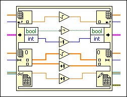

In Place Element Structure
Owning Palette: Structures
Requires: Base Development System
Controls how the LabVIEW compiler performs certain operations and, in some cases, increases memory and VI efficiency. Use the In Place Element structure when you operate on a data element within an array, cluster, variant, or waveform without requiring the LabVIEW compiler to copy data values and maintain those values in memory. You also can use this structure to operate on any data type that you want to maintain within the same data space in memory. Right-click the border of the structure and select the border node that matches the operation you want to perform.

 Add to the block diagram Add to the block diagram |
 Find on the palette Find on the palette |
Right-click the border of the In Place Element structure and select from the following nodes to add to the structure border:
- Array Index / Replace Elements border node
- Array Split / Replace Subarrays border node
- Unbundle / Bundle Elements border node
- Waveform Unbundle / Bundle Elements border node
- Variant To / From Element border node
- In Place In / Out Element border node
- Data Value Reference Read / Write Element border node
- Variant Attribute Get / Replace border node
- Map Get / Replace Value border node
 | Note The Mark As Modifier option does not prevent access to the data and cannot be used as a synchronization method. Instead, use semaphores or data flow to control access to protected data and avoid race conditions. |